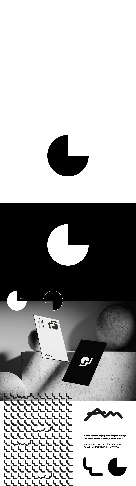

Identité visuelle personnelle

Système graphique personnel : logo, palette de couleurs, typographies et déclinaisons, pensé pour accompagner l'ensemble du portfolio.
Un exercice d'introspection autant que de design : trouver une identité qui reflète une double sensibilité motion / interactif.